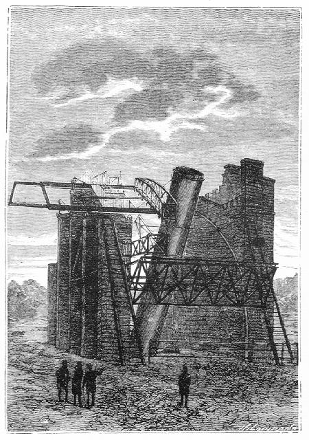

Capítol X
ELS OBSERVADORS DE LA LLUNA
Barbicane havia trobat evidentment
la sola raó acceptable d'aquella desviació. Per petita que fos,
havia estat suficient per a modificar la trajectòria del projectil. Era
una fatalitat. L'agosarada temptativa fracassava per una circumstància
tota fortuïta, i, a menys d'excepcionals esdeveniments, no es podria pas
atènyer la Lluna. ¿Hi passarien prou a la vora per a resoldre
certs problemes de física o de geologia insolubles fins aleshores? Aquesta
era la qüestió, l'única que preocupava mentrestant els ardits
viatgers. Quant a la sort que els reservava l'avenir, no hi volien ni pensar.
Tanmateix ¿què fóra d'ells enmig d'aquelles solituds infinites,
tenint en compte que l'aire aviat els mancaria? Uns quants dies més i
caurien asfixiats en aquella bala errant a l'aventura. Però alguns dies
eren segles per a aquells intrèpids, i ells consagraren tots llurs instants
a observar aquesta Lluna que no esperaven pas aconseguir.
La distància que separava llavors el projectil del satèl·lit
fou estimada en dues-centes llegües aproximadament.1 En aquelles condicions,
sota el punt de mira de la visibilitat dels detalls del disc, els viatgers es
trobaven més allunyats de la Lluna que no els habitants de la Terra,
amb els seus potents telescopis.

...l'instrument aixecat
Hom sap, certament, que l'instrument aixecat per John Rosse a Parsontown, en
què l'augment és de sis mil quatre-centes vegades, acosta la Lluna
a setze llegües.2 A més, amb el potent aparell instal·lat
al Long's-Peak, l'astre de les nits augmentat quaranta-vuit mil vegades era
apropat a menys de dues llegües3 i els objectes que tenien deu metres de
diàmetre es mostraven prou perceptibles.
Així, doncs, a aquella distància, els detalls topogràfics
de la Lluna, observats sense ulleres, no estaven sensiblement determinats. L'ull
abastava el vast contorn d'aquelles immenses depressions impròpiament
anomenades "mars", però no en podia reconèixer la natura.
El ressalt de les muntanyes desapareixia en l'esplèndida irradiació
que produïa la reflexió dels raigs solars. L'esguard, enlluernat
com si s'hagués abocat a un bany d'argent en fusió, es desviava
involuntàriament.
Això no obstant, es desplegava la forma oblonga de l'astre. Apareixia
com un ou gegantí en el qual el seu extrem inferior estigués girat
devers la Terra. En efecte, la Lluna, líquida o mal·leable en
els primers dies de la seva formació, era aleshores com una esfera perfecta,
però aviat, arrossegada cap al centre de l'atracció de la Terra,
va allargar-se sota la influència de la gravetat. En esdevenir satèl·lit,
perdé la puresa nativa de les seves formes; el seu centre de gravetat
va correspondre al davant del centre de la figura, i, d'aquesta disposició,
alguns savis4 n'han tret la conseqüència que l'aire i l'aigua
hagin pogut anar a arrecerar-se devers aquella superfície oposada de
la Lluna i que hom no ha vist mai des de la Terra.5
Aquesta alteració de les formes primitives del satèl·lit
fou sensible només durant alguns instants. La distància del projectil
a la Lluna disminuïa molt ràpidament dintre la seva velocitat considerablement
inferior a la velocitat inicial, però vuit o nou vegades superior a les
dels trens expressos. La direcció obliqua de la bala, en virtut de la
seva mateixa obliqüitat, deixava a Miquel Ardan alguna esperança
d'ensopegar en un punt qualsevol del disc lunar. No podia creure que no hi arribessin.
No! No ho podia creure, i ho repetia sovint. Però Barbicane, millor jutge,
no cessava de contestar-li amb una implacable lògica:
-No, Miquel, no. Només podem assolir , la Lluna per una caiguda, i nosaltres
no caiem. La força centrípeta ens manté sota la influència
lunar, però la força centrífuga ens n'allunya irresistiblement.
Això fou dit en un to de veu que llevà a Miquel Ardan les seves
darreres esperances.
La porció de la Lluna en què el projectil s'apropava era l'hemisferi
Nord, aquell que els mapes selenogràfics col·loquen a baix, car
aquests mapes estan generalment aixecats segons la imatge donada per les ulleres
de llarga vista, i ja és sabut que les ulleres capgiren els objectes.
Tal era el Mappa selenographica de Beer i Moedler que consultava Barbicane.
Aquest hemisferi septentrional presentava vastes planúries accidentades
escampades de muntanyes isolades.
A mitjanit, la Lluna era plena. En aquell moment precís, els viatgers,
hi haurien hagut de posar el peu, si el malastruc bòlid no els hagués
desviats de llur direcció. L'astre, doncs, arribava en les condicions
rigorosament determinades per l'observatori de Cambridge. Es trobava matemàticament
al seu perigeu i al zenit del vint-i-vuitè paral·lel. Un observador
col·locat al fons de l'enorme Columbiad, apuntat perpendicularment a
l'horitzó, hauria enquadrat la Lluna dins la boca del canó. Una
línia recta traçada des de l'eix de la peça hauria travessat
el centre de l'astre de la nit.
No cal dir que durant aquella nit del 5 al 6 de desembre els viatgers no es
prengueren ni un instant de repòs. ¿Haurien pogut cloure els ulls,
trobant-se tan a prop d'aquell nou món? No. Tots llurs sentiments es
concentraven en un sol pensament: veure! Representants de la Terra, de la humanitat
passada i present que es resumia en ells, era amb llurs propis ulls que la raça
humana guaitava aquelles regions lunars i penetrava en els secrets del seu satèl·lit!
Una certa emoció els omplia el cor, i ells anaven silenciosament d'un
vidre a l'altre.
Llurs observacions, reproduïdes per Barbicane, foren rigorosament determinades.
Per a fer-les, tenien ulleres de llarga vista. Per a controlar-les, disposaven
de mapes.
El primer observador de la Lluna fou Galileu.6 La seva pobra ullera sols augmentava
trenta vegades.7 Malgrat tot, en aquestes taques que es veuen esquitxades pel
disc lunar, "com els ulls de les plomes de la cua d'un paó",8
ell fou el primer a reconèixer-hi muntanyes i amidà algunes altures
a les quals donà exageradament una elevació igual a la vintena
part del disc, o sia vuit mil vuit-cents metres. Galileu no aixecà cap
mapa de les seves observacions.9
Alguns anys més tard, un astrònom de Danzig, Hevelius - per procediments
que només eren exactes dues vegades el mes, en la primera i segona quadratures
-, reduí les alçàries de Galileu a un vint-i-sisè
solament del diàmetre lunar. Exageració a la inversa. Però
és a aquest savi que es deu el primer mapa de la Lluna. Les taques clares
i arrodonides formen les muntanyes circulars, i les taques fosques indiquen
immensos mars que en realitat no són més que planúries.
A aquelles muntanyes i a aquelles extensions d'aigua, els donà denominacions
terrestres. Així, hom hi veu un Sinaí al mig d'una Aràbia,
un Etna al centre d'una Sicília, uns Alps, Apenins, Càrpats i
també el Mediterrani, el Palus Meotide,10 el Pont-Euxí11 i el
mar Caspi. Noms ben mal aplicats, car ni aquelles muntanyes ni aquells mars
no recorden per res la configuració de llurs homònims del globus
terrestre. Amb prou feines en aquesta gran taca blanca, relligada al Sud i que
té més vastos continents i acaba en punta, hom reconeixeria la
imatge invertida de la península índia, del golf de Bengala i
de la Cotxin-Xina. I així fou com aquests noms no foren conservats. Un
altre cartògraf, més bon coneixedor del cor humà, proposà
una nova nomenclatura que la vanitat humana va afanyar-se a adoptar.
Aquest observador fou el pare Riccioli, S. J., contemporani d'Hevelius. Va aixecar
una carta grollera i plena d'errors. Però, a les muntanyes, va posar-los
els noms dels grans homes de l'antiguitat i dels savis de la seva època,
cosa molt seguida en ús des de llavors.
Un tercer mapa de la Lluna fou executat el segle XVII, per Domènec Cassini.
Superior al de Riccioli per l'execució, és inexacte pel que es
refereix a les mides. Se'n feren diverses edicions, però les seves planxes,
durant molt de temps guardades a la Impremta Reial, foren venudes a pes com
a coure vell.
La Hire, cèlebre matemàtic i dibuixant, féu un mapa de
la Lluna, que tenia una alçària de quatre metres però que
no va arribar mai a ésser gravat.
Després d'ell, un astrònom alemany, Tobias Mayer, cap a mitjan
segle XVIII, començà la publicació d'un magnífic
mapa selenogràfic, segons els amidaments lunars rigorosament verificats
per ell, però la seva mort, que s'esdevingué el 1762, impedí
d'acabar aquell excel·lent treball.
Vénen tot seguit Schroeter, de Lilienthal, que esbossà nombrosos
mapes de la Lluna, i després un tal Lohrmann, de Dresde, a qui hom deu
una làmina dividida en vint-i-cinc seccions, quatre de les quals han
estat impreses.
No fou fins el 1830, quan Beer i Moedler12 compongueren llur famós Mappa
selenographica, seguint una projecció ortogràfica. Aquella carta
reproduïa amb exactitud el disc lunar, tal com apareix, sols que les configuracions
de les muntanyes i de les planes són exactes només en llur part
central; però en totes les altres, tant en les parts septentrionals o
meridionals com en les orientals o occidentals, aquelles configuracions donades
en reducció no poden comparar-se amb les del centre. Aquest mapa topogràfic,
d'una alçària de noranta-cinc centímetres i dividit en
quatre parts, és l'obra d'art de la cartografia lunar.13
Després d'aquests savis, cal fer esment dels relleus selenogràfics
de l'astrònom alemany Julius Schmidt, dels treballs topogràfics
del pare Secchi, S. J., de les magnífiques proves fotogràfiques
de l'aficionat anglès Warren de la Rue14 i, en fi, d'un mapa en projecció
ortogràfica de Lecouturier i Chapius, bell model aixecat el 1860, d'un
dibuix molt net i d'una disposició claríssima.
Aquesta és la nomenclatura dels diferents mapes relatius al món
lunar. Barbicane en posseïa dos, el de Beer i Moedler, i el de Chapius
i Lecouturier. Ambdós havien de fer més fàcil el seu treball
d'observador.
Quant als instruments d'òptica posats a la seva disposició, eren
excel·lents ulleres marines, especialment construïdes per a aquest
viatge. Augmentaven cent vegades els objectes. Haurien apropat la Lluna a una
distància de la Terra inferior a mil llegües.15 Però aleshores,
a una distància que vers les tres de la matinada no passava de cent vint
quilòmetres, i en un ambient que cap atmosfera no enterbolia, aquests
instruments havien d'apropar el relleu lunar a menys de mil cinc-cents metres
de distància.
1. 800
quilòmetres.
2. 64 quilòmetres.
3. 8 quilòmetres.
4. Molt particularment l'astrònom danès, Pere
A. Hansen, iniciador de la teoria que exposa breument Juli Verne. (N. del T.)
5. En efecte, Hansen, director en 1825 de l'observatori
de Seeberg de la Universitat de Gotha, fou el primer a anunciar la teoria que,
a causa de certes peculiaritats del seu moviment, la Lluna no és esfèrica,
sinó que afecta la forma d'un ou. La part estreta d'aquest ovoide apunta
a la Terra, i d'ací Hansen en tragué Ia conseqüència
que a la Lluna hi ha aire i aigua, però que aquestes masses es trobaven
acumulades a l'altre hemisferi, això és, a l'hemisferi invisible.
Aquesta teoria fou combatuda tot seguit, i Simó Newcomb va reeixir a
refutar-la en demostrar que la Lluna és tan esfèrica com Ia Terra.
A més, a causa del moviment de libració del nostre satèl·lit,
esdevenen visibles temporalment certes regions situades més enllà
del contorn, uses vegades d'un costat i unes altres de l'altre. En aquestes
zones, que alternativament són visibles i invisibles, s'estenen algunes
planúries i "mars" amb alguns cràters i circs, part
dels quals ja ens són coneguts de sempre. L'altre hemisferi, doncs, no
es diferencia gens del que nosaltres veiem. (N. del T.)
6. Galileu va emprar immediatament per a l'observació
dels astres l'aparell per ell construït i descobrí, pel que es refereix
a la Lluna particularment, el moviment de les libracions i les seves muntanyes
i els seus cràters (1609). Probablement, l'observació de les àrees
negres, que en certa manera són circulars, degué suggerir-li la
idea que es tractava de mars assecats dels primitius oceans lunars. Tanmateix,
sembla demostrat que no fou ell el qui va donar-hi aquesta interpretació,
sinó Kepler. (N. del T.)
7. Segons conta el propi Galileu en el seu llibre Nuncius
Sidereus, la primera ullera que ell va construir li permetia de veure els objectes
tres vegades més a prop i nou vegades més grans. Poc temps després,
amb un segon instrument construït, els objectes augmentaren 60 vegades.
I, endut pel seu entusiasme i per la fal·lera d'aconseguir majors i nous
descobriments astronòmics, va reeixir a fer una ullera tan excel·lent
que els objectes hi apareixien augmentats mil vegades, i acostats trenta. Vegi's
La Lunette d'Approche, de H. Rapin - Georges Bridol Editeur - Lausanne - 1861.
(N. del T.)
8. Segons la impressió visual de Galileu. (N. del
T.)
9. Contràriament al que ens diu Juli Verne, Galileu
dibuixà el primer mapa de la Lluna (1610), el qual apareix en el seu
llibre Nuncius Sidereus, editat a Francfort aquell mateix any. Aquest llibre
estigué exposat a l'Exposició General d'Estudis Lunars, celebrada
a Barcelona el 1912, i el dibuix de la Lluna es troba reproduït en diverses
obres de divulgació astronòmica. És un dibuix molt senzill,
un esbós gairebé; la Lluna hi apareix en quart creixent, amb una
línia dentada i registra, probablement, el cràtec Tico, les prolongacions
dels Alps i dels Apenins, i, amb taques enfosquides, els "mars", particularment
el Mar del Fred i el de les Pluges.
Alguns consideren que aquest mapa no és l'original, sinó una còpia
de l'autèntic, que es degué perdre, molt probablement per mà
del botxí de la Inquisició, en cremar-lo junt amb altres llibres
i papers a la mort de l'il·lustre savi florentí.
Afegirem també que des de Galileu fins a Hevelius de Danzig, que és
el segon dels selenògrafs que esmenta Juli Verne, es dugueren a terme
l'execució d'altres mapes més de la Lluna per part d'alguna deixebles
de Galileu i astrònoms, particularment Langrenus (o Van Langren), cosmògraf
del rei Felip IV d'Espanya. (N. del T.)
10. Llacuna Meòtida, antic nom del Mar Azof. (N.
del T.)
11. El Mar Negre. (N. del T.)
12. Joan Enric Moedler, professor alemany i astrònom
aficionat, i Guillem Beer, banquer, foren dos amics inseparables. Ambdós
treballaren junts per l'Astronomia, car Moedler ensenyà la ciència
dels astres a Beer, i aquest, al seu torn, correspongué proporcionant
el capital necessari per a la instal·lació d'un petit observatori.
EI 1837 publicaren el famós mapa de la Lluna, que resumeix llurs observacions
dea del 1830. (N. del T.)
13. Després de Beer i Moedler altres notables mapes
selenogràfics s'han executat per part de diferents astrònoms.
Això no obstant, en l'actualitat, l'obra d'art de la cartografia lunar
és un mapa tan minuciós en els seus més ínfima detalls
com colossal per la seva mida, publicat el 1946 per la "British Astronomycal
Association". Aquest mapa, de 7,50 metres de diàmetre i reduït
a 2,50 metres en 25 seccions, constitueixen un vertader treball de benedictí
pels molts anys d'estudi i d'observació, i tot ell és obra de
l'astrònom anglès míster H. Percy Wilkins, mort el 1960,
després d'haver consagrat la seva vida a l'estudi de la Lluna. (N. del
T.)
14. Es tractava de mostres estereoscòpiques. (N.
del T.)
15. 4.000 quilòmetres.